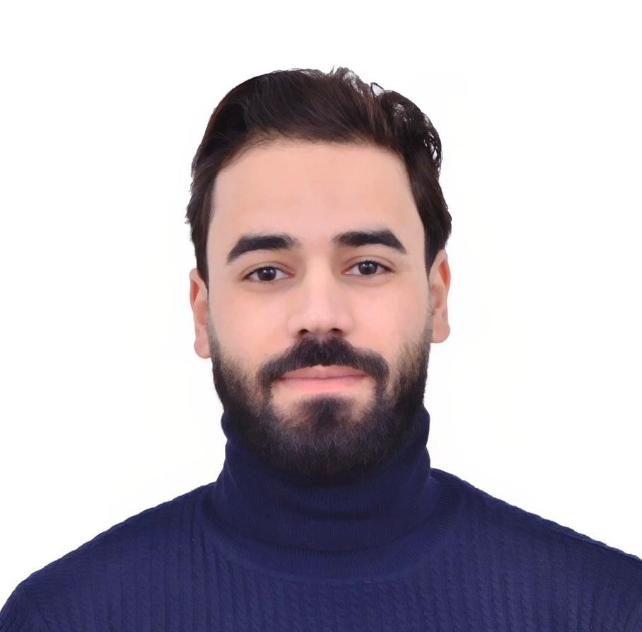

Ausbildungsplatz als Pflegefachmann
Leidenschaftlich engagiert für Pflege und Gesundheit
Nach meinem Abschluss in Informatiktechnologie habe ich erkannt, dass meine wahre Leidenschaft in der Pflege und dem Gesundheitswesen liegt. Mit großem Interesse habe ich mich entschieden, eine Ausbildung zum Pflegefachmann zu absolvieren.
Meine praktische Erfahrung sammelte ich durch ein Praktikum im Centre Câlin d'Enfant in Salé, Marokko, sowie durch mehrere zertifizierte Online-Pflegekurse. Ich bin hochmotiviert, lernbereit und freue mich darauf, mich sowohl fachlich als auch persönlich weiterzuentwickeln.
B2 Deutsch
6 Monate
7+ Kurse
4 Sprachen
Centre Câlin d'Enfant, Salé, Marokko
Haut-Commissariat Plan (HCP), Provinz Salé
3STD SARL / Kooperationsmit dem Plankommissariat (HCP)
ISTA Salé Al Jadida / OFPPT, Marokko
Abschluss: Spezialisierter Techniker
Weiterführende Schule Jaber Ibn Hayane, Salé, Marokko
Fachrichtung: Naturwissenschaften (Lebens- und Erdwissenschaften)
04.02.2026
Europäischer Referenzrahmen B2 - 220/300 Punkte (Befriedigend)
23.02.2026
Marokkanischer Roter Halbmond - Zertifiziert
12.06.2026
Curendo - Grundlagen der Diabetesbetreuung und Folgekrankungen
12.06.2026
Curendo - Pflege nach Schlaganfall und Demenzbetreuung
13.06.2026
Curendo - Grundlagen der häuslichen Pflege
12.06.2026
Curendo - Spezialisierte Pflege nach Schlaganfall
mit großem Interesse habe ich erfahren, dass Sie Ausbildungsplätze zur Pflegefachkraft anbieten. Da ich eine sinnstiftende und zukunftsorientierte Aufgabe suche, bei der der Mensch im Mittelpunkt steht, bewerbe ich mich mit großer Motivation um einen Ausbildungsplatz in Ihrer Einrichtung.
Name: Amine Albouhaji
Geburtsdatum: 11. Januar 1998
Adresse: Straße Hay Baraka 3, 11130 Salé, Marokko
Telefon: +212 688727657
E-Mail: albouhajiamine@gmail.com
Nationalität: Marokkanisch